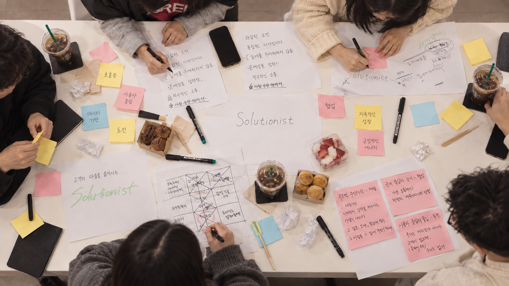
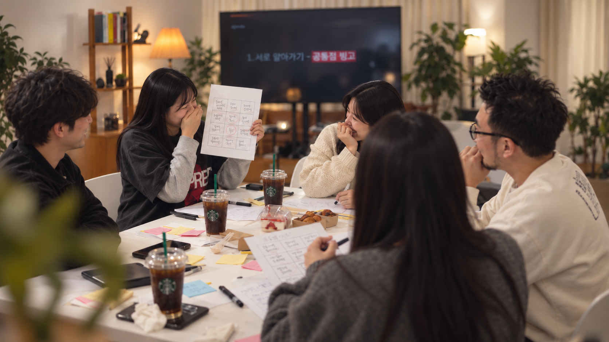
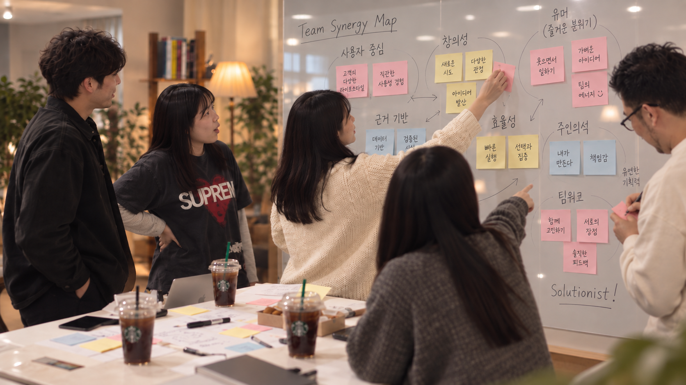
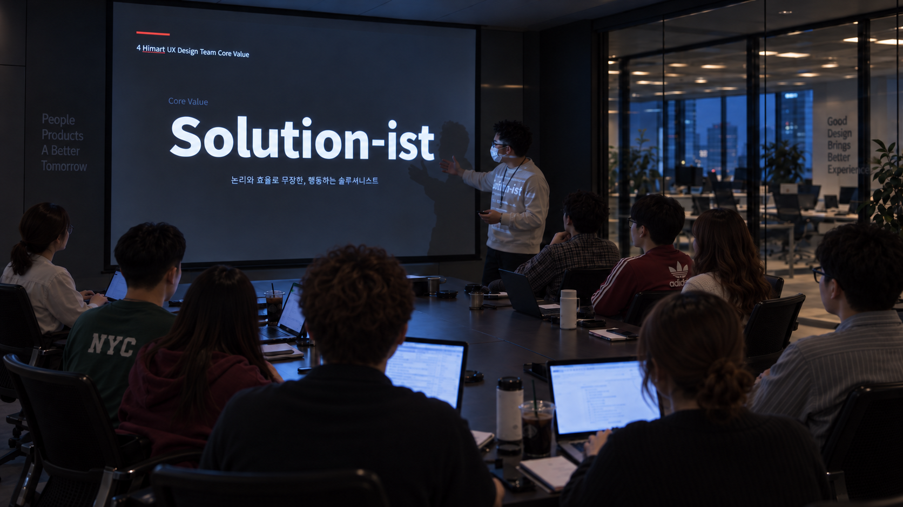

이 회사에서 UX 디자인팀은
무엇을 해야 하는가.
무엇을 해야 하는가.
화면을 넘어 어떤 문제와 결과를 책임질 팀인지 정의해야 했습니다.
짧은 시간에 모인 디자이너들이 같은 목표와 기준, 같은 목소리로 일할 수 있도록 팀의 역할과 가치, 일하는 방식을 함께 정의했습니다.
서로 다른 판단 방식과 협업 습관을 가진 구성원들이 빠르게 목표와 일하는 방식을 맞출 필요가 있었습니다.
화면을 넘어 어떤 문제와 결과를 책임질 팀인지 정의해야 했습니다.
개별 기준 대신 함께 볼 목표와 우선순위를 맞춰야 했습니다.
같은 기준을 써야 리뷰와 협업의 조율을 줄일 수 있었습니다.
같은 방향과 목소리로 판단해 내부 소통을 줄이고, 다른 부서에도 팀의 역할을 일관되게 설명하려 했습니다.
“우리는 회사에서 어떤 역할을 하고, 무엇을 책임지며, 어떤 방식으로 문제를 해결할 것인가?”
핵심가치는 의사결정·협업·리뷰에서 다시 돌아올 수 있는 실제 판단 기준이어야 한다는 점부터 공유했습니다.
서로의 성향과 강점을 먼저 이해해야 합의된 기준도 우리 팀의 언어가 될 수 있다고 봤습니다.

좋아하는 브랜드, 취미, 업무 스타일을 공유하며 서로의 공통점과 차이를 확인했습니다.
상위 강점을 공유하고 어떤 조합이 더 좋은 결과를 만들 수 있을지 함께 논의했습니다.
반복해서 나타난 강점을 묶어 팀의 공통 성향을 세 가지로 정리했습니다.

긴장을 풀고 밝은 면을 찾는 힘이 팀의 결속에 기여했습니다.
익숙한 방식보다 더 나은 방법과 새로운 해결책을 찾았습니다.
솔직하게 이야기하고 신뢰를 기반으로 투명하게 협업했습니다.
우리는 진실함으로 서로를 믿고, 창의성으로 새로운 가치를 만들며, 유머로 즐겁게 일하는 팀이라는 공통점을 확인했습니다.
각자가 중요하게 생각하는 태도와 협업 경험을 자유롭게 꺼내고, 반복해서 등장한 의견을 팀의 기준 후보로 모았습니다.

핵심가치와 일하는 방식에 대해 각자가 중요하게 생각하는 기준을 자유롭게 공유했습니다.
공통으로 등장한 의견을 핵심가치와 일하는 방식의 후보로 묶어 함께 살펴봤습니다.
UX 디자인팀의 역할을 산출물의 형태로 제한하지 않고, 사용자와 비즈니스의 문제를 발견하고 필요한 영역까지 움직여 해결하는 팀으로 바라봤습니다.

논리와 효율로 무장한,
행동하는 솔루셔니스트.
의견이 다르거나 일이 막힐 때 개인의 취향으로 돌아가지 않고, 같은 기준으로 대화하고 결정할 수 있도록 Way of Working을 구체화했습니다.
모든 설계에는 설명 가능한 근거가 있어야 하며, 막연한 합의보다 전문성을 기반으로 공감과 확신을 만듭니다.
의미 없이 반복되는 공정을 줄이고 한정된 자원 안에서 사용자 경험에 가장 큰 영향을 주는 일에 집중합니다.
적당한 합의보다 옳다고 믿는 방향을 근거와 함께 제안하고, 필요한 순간에는 분명하게 No라고 말합니다.
설계라는 역할의 경계에 갇히지 않고 기획과 개발 등 필요한 영역까지 참여해 문제 해결을 우선합니다.
솔직한 공유와 피드백을 문제 해결의 지름길로 보고, 유머와 활력으로 안전하게 몰입할 수 있는 분위기를 만듭니다.
아이디어를 말하는 데서 끝내지 않고 실제 결과까지 책임지며, 고객 만족이라는 목적에 도달할 때까지 실행합니다.
프로젝트의 판단·리뷰·협업·회고에 같은 기준을 적용하고,
실제 행동과의 차이를 확인해 계속 보완합니다.
핵심가치를 실제 판단과 행동으로 옮길 수 있는 문장으로 구체화합니다.
개인의 취향보다 문제와 근거, 합의한 Way of Working을 기준으로 결정합니다.
팀 안팎에서 UX 디자인팀의 역할과 판단 근거를 일관된 언어로 전달합니다.
실제 행동과 기준 사이의 차이를 확인하고 필요한 방식은 다시 합의해 업데이트합니다.
합의한 기준을 실제 업무에서 반복해 사용하며, 팀이 같은 방향으로 움직이게 하는 것이 목적이었습니다.
프로젝트와 리뷰, 회고에서 같은 방향을 확인하며 구성원의 강점은 살리고, 판단 기준과 팀의 목소리는
하나로 맞춰 계속 보완하고 있습니다.
처음에는 핵심가치와 일하는 방식을 굳이 왜 정의해야 하느냐는 질문도 있었습니다. 하지만 실제 협업에서 합의한 기준으로 판단하고 소통하자 의사결정이 빨라졌고, 필요성도 자연스럽게 체감했습니다. 결국 팀 빌딩의 핵심은 사람을 모으는 것이 아니라, 팀의 역할과 기준을 함께 정하고 이를 실제 판단과 협업의 언어로 사용하는 것이었습니다.